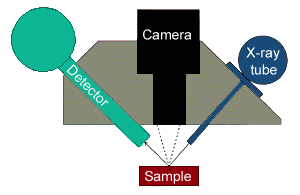

Energy dispersive X-ray fluorescence (ED-XRF)X-ray fluorescence is a technique of chemical analysis. It has been called 'the curator's dream instrument' because measurements are non-destructive and usually the whole object can be analysed, rather than a sample removed from one. The technique involves aiming an X-ray beam at the surface of an object; this beam is about 2 mm in diameter. Place mouse over image to see a photograph of
the XRF equipment The interaction of X-rays with an object causes secondary (fluorescent) X-rays to be generated. Each element present in the object produces X-rays with different energies. These X-rays can be detected and displayed as a spectrum of intensity against energy: the positions of the peaks identify which elements are present and the peak heights identify how much of each element is present. ED-XRF is accurate and fast (a result can be obtained in a few minutes), but it is not sensitive enough to measure low concentrations such as trace elements (i.e. those present at levels below about 0.1%). However, it will quickly determine the alloy composition of a metal artefact and it can also be used to analyse some non-metallic materials such as ceramics and glass. One limitation of the technique is that only a thin layer, less than 0.1mm, is actually analysed. This can sometimes give misleading results on corroded or plated metals unless the surface is cleaned. XRF: Further Reading Look up another technique |